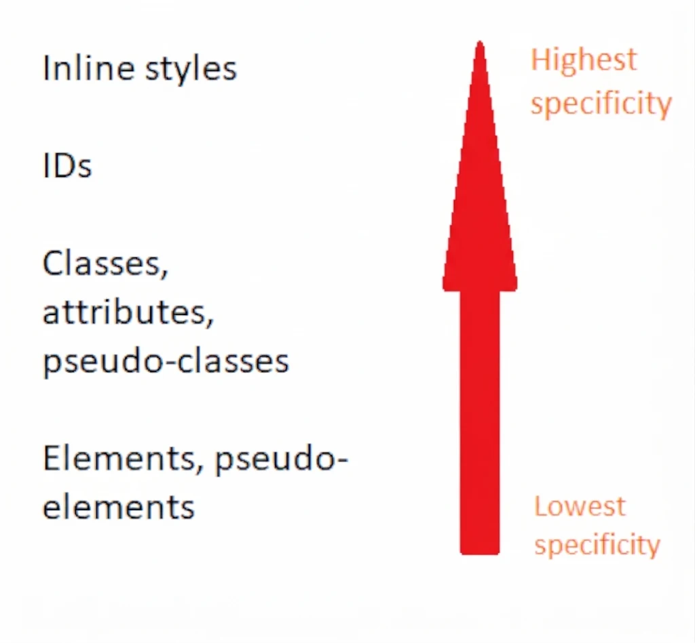
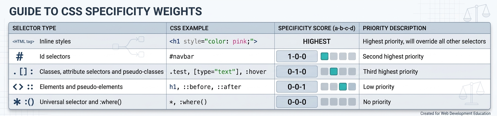

Web4All
CSS Style Hierarchy
The CSS style hierarchy is the system which is used to determine which style rule to apply to HTML elements when there are multiple style rules in effect, applying different styling to the same element and its properties. The 3 principles of the CSS style hierarchy are specificity, inheritance and the cascade.
The 3 Principles of The CSS Style Hierarchy
Specificity
Specificity, within CSS, is one of the factors that the cascade algorithm uses to decide which style rule to apply to a property when multiple of the same type are competing with one another. Resultantly this greatly influences the overall effect of CSS depending on the HTML structure of the document.
Inheritance
If an element has had no style rules explicitly written for it, they can inherit style rules from their parent element. In the case that there are no style declarations written for any elements at all on a webpage, then the browser's default styles are applied. However not all CSS style properties are inherited by default.
Cascade
This makes up the 'C' in CSS! The cascade is the algorithm that decides how to go about finding the exact style rule that should be applied to each HTML element within a document. The cascade algorithm follows a few steps which we'll explore a little further down below.
CSS Specificity

The principle of specificity pretty much prioritises how specifically an individual element has been targeted. The picture above illustrates this pretty well. The least specific selector however is actually the Universal selector. No specificity priority is applied to this.
Element and pseudo element selectors such as h1, div and ::selection are next up in the hierarchy. Further up the chain come classes, attribute selectors and pseudo classes such as .big-bold, [target] and :hover.
ID selectors are more specific than classes though which makes sense as a class can be reused multiple times whereas an ID tends to point to exactly one element that it's applied to. Finally, inline styles defined within an element's tag have the highest specificity within the hierarchy and will overrule most other CSS rules unless those rules are suffixed with "!important".

CSS specificity can actually be boiled down to numbers. The specificity weight notation is presented in the form "X-Y-Z". X represents the number of ID selectors, Y represents the number of pseudo classes, class and attribute selectors and Z represents the number of pseudo element and element selectors. The selector that has the highest number in the left-most column of the "X-Y-Z" weight notation takes precedence and is resultantly applied. Lets take a look at some examples below.
In example 1, we have 2 style rules that are controlling foreground colour. The universal selector is directly targeting all elements and setting the foreground colour to red. This ruleset would have a specificity weight of 0-0-0.
There is also an element selector stipulating that the foreground colour should be blue for div elements only. This ruleset would have a specificity weight of 0-0-1 as it contains 1 element selector. Therefore the div ruleset "wins" and will be applied to div elements as it has the highest specificity. See this in action in the codespace below!.
Try it in a codespace!
Example 1
*
{
color: red;
}
div
{
color: blue;
}
Example 2
.big-bold-yellow
{
background-color: yellow;
font-size: 20px;
font-weight: bold;
}
#important-stuff
{
background-color: pink;
font-size: 30px;
}
In example 2, we have 2 style rules. The class "big-bold-yellow" sets a yellow background and a large, bold font. The "important-stuff" ID sets the font to be even larger and to have a pink background.
The specificity weight of the "big-bold-yellow" selector is 0-1-0 due to it being a class selector. The specificity weight of the "important-stuff" selector is 1-0-0 due to it being an ID selector. Resultantly, the "important-stuff" declaration block "wins" and has its style rules applied taking precedence over the class selector.
Try it in a codespace!Challenge!
Try "breaking" the examples I've provided within the codespaces by applying inline styles of a higher specificity that will override the style rules I've pre-written out for you.
CSS Inheritance
Below we'll explore a couple examples of CSS inheritance in action.
In example 1, we have 2 CSS rulesets. The first of which is the "bold-blue" class selector. This sets the foreground colour to blue and the font to bold. There is also an element selector targeting div elements. This sets the font to 25px size and the background colour to yellow. everything with the class "bold-blue" will have the relevant style rules applied. All div elements will also have all of its relevant style rules applied unless targeted by a ruleset of higher specificity, such as the class selector above.
However what if we have p elements within the document nested inside elements with these style rules applied to them? There are no specific style rules written for p elements therefore, via inheritance, they will have the styles of their parent element applied to them!
Try it in a codespace!
Example 1
.bold-blue
{
font-weight: bold;
color: blue;
}
div
{
background-color: yellow;
font-size: 25px;
}
Example 2
h3
{
background-color: pink;
font-weight: bold;
font-size: 25px;
}
div
{
background-color: yellow;
font-weight: bold;
}
In example 2, we have declaration blocks for both h3 and div elements. We now know, from our example above, what is likely to happen if we were to place a p element within a div or a h3 element. The p element will inherit the style of its parent element as it has no style rules here that have been written for it. However what would happen if the p element was just placed on its own within the document, not within any other element?
Well firstly, most elements that are displayed on the screen will have "body" as the ancestral (non-direct) parent element so any styles overarchingly being applied to the body will be inherited. Here however we have no style rules that have been written for the body element. Resultantly the p element will still be displayed on the screen however it will be rendered with the default styles that have been written for the browser which the webpage is being viewed in.
Try it in a codespace!The CSS Cascade
The cascade algorithm uses 3 metrics to decide how to apply style rules to HTML elements. The first metric is stylesheet origin and importance. The second metric is specificity with regard to the element and the selectors that are targeting it. The third metric is source order.
Origin and Importance
This refers to the origin of where styles come from and what their level of importance is. "!important" can be added to the end of any CSS declaration in order to increase its level of importance over other rules that may take precedence in the cascade order due to higher specificity or other factors.
Style Origins (Highest Importance --> Lowest Importance):
- User Stylesheet (with "!important")
- Author Stylesheet (with "!important")
- Author Stylesheet - Styles written by the webpage author in .CSS files
- User Stylesheet - Styles configured or set by the user
- Browser Default Styles
Specificity
In the case that an element has 2 conflicting styles that have both the same origin and level of importance the cascade algorithm moves forward to its second metric of consideration.
This is specificity. It will use the principle of specificity and the corresponding weight notation in order to apply the style with the highest specificity to the element being looked at.
Source Order
In the case that style declarations have the same origin, level of importance and specificity, the source order is then considered. The styles are applied in order of appearance. In the case of author stylesheets, the declaration written the lowest down takes precedence and is applied. There is also an order of precedence with regard to author stylesheets.
If an external and internal stylesheet both have style rules of the same specificity weighting then the last rule the browser reads will be applied. In other words if the <style> element is below the <link> tag in the document then the rule within the internal CSS will be applied. However if the <link> tag is below the <style> element within the document then the rule within the external CSS will be applied.